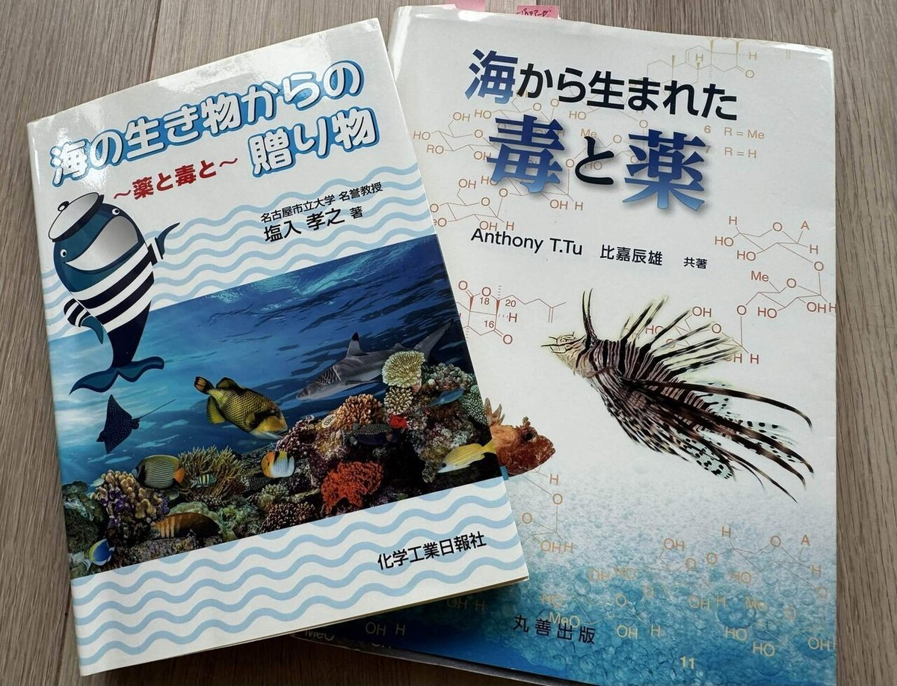

【海水魚の餌】 第５回：
生餌のメリットⅢ ―天然型栄養素の優位性と腸内細菌叢への可能性など
Published: 2026.02.15 | Last Updated: 2026.07.24
ここまでの連載では、人工飼料における限界と、そして生餌が魚にもたらす具体的なメリットについて、主に栄養学的な視点からお話してきました。
今回は少し視点を変えて、より自由な発想で、生餌の可能性について考えてみたいと思います。
海洋生物を素材とした“生餌（冷凍餌・活餌を含む。以下「生餌」と表記します）”が持つメリットについて、これまでとは少し違う角度からお話していきます。
まだ魚類では研究が進んでいないことも多く、
今回は私自身が色々と調べる中で「もしかしたらこれは生餌のメリットなのではないか？」と感じた仮説が中心となります。
なるべく根拠を示しながら進めますが、私的仮説についてはあくまで参考程度に読んでいただければと思います。
今回も文献の引用部分では、なるべくエビデンスベースで主観を排しつつ構成していきます。そのぶん文章がやや堅く感じられるかもしれませんが、ご了承ください。
８．“そのまま使える”栄養素──自然のかたちで届くちから
この章で取り上げたい生餌のメリットは、“栄養素が魚にとって吸収しやすい自然な構造で存在している”という点です。
本章では、栄養素が「どれだけ効率よく吸収・利用されるか」という、生体利用性（バイオアベイラビリティ）の観点から、生餌の価値について考えてみたいと思います。
第1回の記事「第１回：人工飼料の限界を探る」でも触れたように、
人工餌の製造工程では、栄養素の一部が損失・変性してしまいます。
失われた既知の成分については、例えば
「合成ビタミン」や「ミネラル（無機塩類）」として添加されています。
しかし、それらが魚にとって最適なタイミングで、必要な量だけ吸収・利用されているかどうかは不明瞭な部分も多く、検証が難しいのが現状です。
一方、生餌──たとえば魚卵・甲殻類・プランクトンなどには、細胞の中に生体が本来利用している“自然な構造のかたち”のままで、ビタミンやミネラルなどが存在しています。
これは、加熱などで変性した栄養素や、人工的に合成・加工された添加物とは構造も特性も異なり、それこそが本章で注目したいポイントです。
この点は、生体利用性（バイオアベイラビリティ）という観点からも、今後さらに解明が進むことが期待される分野です。
残念ながら魚類における研究はまだ少ないものの、人間の栄養学では次のような知見が蓄積されています。
自然由来の栄養素は、本来の立体構造（立体異性体、補助因子との複合体など）を保ったまま存在しており、吸収率が高く、体内での働きがスムーズであることが報告されています。いくつか例を紹介します：
- ビタミンE（d型 vs dl型）
天然型（d-αトコフェロール）は、合成型（dl-α）よりも生体利用率が高く、血中滞留時間も長いとする研究が複数あります。（Traber & Sies, 1996） - ビタミンB群（補酵素型 vs 単体）
B1（チアミン）やB2（リボフラビン）は、食品中では補酵素型やリン酸化型で存在し、活性が高い状態。サプリや添加剤に含まれる非活性型は、体内で活性型に変換される必要があるため、吸収効率や即効性において劣る場合があるとされています。（Combs, 2012） - ミネラル（キレート型 vs 無機塩）
食品中のミネラルは、たんぱく質やアミノ酸と結合したキレート型で安定化されています。人工飼料に添加される硫酸塩やリン酸塩などの無機型よりも、自然型の方が吸収率が高いとする報告が複数あります。（Baum et al., 2000）
こうした天然の栄養素は、生餌の細胞膜や構造体に包まれた状態で存在しており、これを“内在型の栄養素”と呼んでもよいかもしれません。
細胞の中で守られたまま取り込まれることで、栄養素同士の自然なセット（たとえば、「タンパク質＋ビタミン＋脂質＋酵素」）が崩れず、相乗効果を発揮しやすくなるのではと期待しています。
これまで魚類の栄養研究では、第４回「海水魚の浸透圧調整」で解説したように、飲水した海水由来の成分も腸から吸収されるため、餌由来の栄養素だけを正確に評価することが困難でした。
しかし近年は、安定同位体トレーサー法や精製飼料（Purified Diets）の導入により、水由来と餌由来の栄養素を区別した解析が可能になっています。さらに分子生物学の進歩により、魚が天然型ミネラル（キレート構造）を優先的に取り込む仕組みも、少しずつ明らかになってきています。
今まさに大きく進歩している分野であり、天然型栄養素の価値についても、今後さらに多くのことが解明されていくはずです。
９．腸内細菌の再取り込み──出会いの場
この章では、腸内細菌の多様性に注目し、生餌がその維持・再構築に果たす可能性について考察します。
人の腸内細菌叢については
様々な研究が進んでいて、腸内環境を整える事で消化吸収の改善、免疫力向上、生活習慣病予防、メンタルヘルスの改善など、様々な効果が期待できると言われています。
「腸活」という言葉が盛んに使われるようになったのもこう言った背景があるからですね。
魚類の腸内細菌叢は、環境や食餌内容に応じて変化することが知られていて、
とくに、閉鎖的な飼育環境で人工飼料を与え続けると、腸内細菌の多様性が低下することが報告されており、天然のクロソイと養殖のクロソイを対象とした比較実験（Kim et al., 2023）でもその違いが確認されています。
腸内細菌の多様性が失われると、魚類においても栄養状態だけでなく、行動や気分、ストレス反応といった生理機能にまで影響を及ぼす可能性があることは、第１回「人工飼料の限界を探る・第５章」で詳しく触れさせていただきました。
では、野生の魚たちは、どうやってその腸内細菌叢の多様性を保っているのでしょうか？
仔魚はふ化時には極めて少ない細菌しか持っておらず、
「耳嚢膜（chorion）に付着した細菌」「周辺環境の水中の微生物」「最初の餌を通じて」腸内細菌が増え始めます。そして摂餌が活発になるにつれて、急速に多様化が進むとされています。（Egerton et al., 2018）
一般的に魚類は、仔魚・稚魚の間の食性は殆ど肉食な事が知られていますが、その後成長するにつれてその魚の本来の食性へ変化していきます。
そして、肉食魚・草食魚・雑食魚では、腸内細菌叢の組成が大きく異なることが複数の研究で示されています。
たとえば草食魚の腸内には、海藻や難分解性の有機物を発酵分解する細菌が多いことが知られています（Pisaniello et al., 2023）。
近年の研究では、次世代シーケンサーを用いたメタゲノム解析（環境中の遺伝子を網羅的に調べる技術）や分子生物学の飛躍的な進歩によって、魚類の腸内細菌に対する理解は大きく変わりつつあります。
最新の研究では、従来考えられていた「腸内に定着する常在菌」が主体ではなく、野生魚の腸内細菌の多くは、餌や周囲の環境から継続的に取り込まれる「一過性菌（Transient microbiota）」で構成されていることが明らかになってきました。つまり魚たちは、栄養素だけでなく、多様な微生物も日々の食事から取り込み続けていることが分かってきました（Yang et al., 2022；Topal, 2026）。
一方で、飼育環境で人工餌だけを与えている場合、そうした自然界に存在する多様な細菌との「出会いの場」をほぼ奪ってしまいます。
飼育下でも、生餌──とくに小さな甲殻類や魚類を“丸ごと”与えることで、餌となる生物の表面に付着した微生物や、腸内細菌、その代謝産物まで一緒に取り込むことにより、腸内細菌叢の「再接種（re-inoculation）」として機能している可能性は十分に考えられます。
そう考えると、こうした給餌スタイルは、腸内細菌叢の多様性を維持するうえでも重要な役割を果たしているのではないでしょうか。
言い換えれば、生餌を給餌に利用した腸内細菌叢の“再取り込み”を通じて、腸内環境をより自然に近づける──いわば“再野生化”を目指すというアプローチが、決して夢物語ではないと考えています。
もしそうであれば、大きな生餌のメリットと言って良いんではないでしょうか。
１０．「天然ガットローディング」と言う考え方
この章では、生餌のメリットとして私が考える仮説──「天然ガットローディング」──について述べたいと思います。
一般的に、アルテミアにビタミンや脂肪酸を与えて栄養価を高める手法は「栄養強化」と呼んでいますが、
これは捕食される餌生物側の消化管に栄養素を蓄積させることから、「人工的ガットローディング（gut loading）」と位置づけることができます。
観賞魚の世界でも“ガットローディング”という概念は広く利用されていて、たとえばアロワナに与える金魚に、あらかじめ藻類を多く含んだ餌やビタミン剤を事前に摂らせてから給餌する──という方法などがそれに当たります。
さて、ここからが本題です──
文献によれば、ツノナシオキアミの胃内容物は、体重の約0.1％に達し、
その中には円石藻、ケイ藻、繊毛虫、小型甲殻類などが含まれています。
（瀧ら, 2002）
つまり、植物プランクトンを摂取している中間捕食者を捕食することで、植物プランクトン由来の栄養素を“間接的に”摂取できるわけです。例えば、植物プランクトン由来の機能性成分（例：フコキサンチンなどのカロテノイド）を、上位捕食者が間接的に得ている可能性がある訳です。
これは人工飼料ではまず再現できない、まさに“天然ガットローディング”と呼びたくなるような自然な摂餌形態じゃないでしょうか？
こうした給餌方法は、餌生物そのものを“まるごと”摂取することで初めて得られる“栄養の複合体”とも言えると思います。
飼育魚の腸内環境や栄養状態においても、こうした“二次的な栄養供給”が意味を持つ可能性は十分に考えられます。
１１．毒か薬か──自然界の“薬膳”視点
この章では、生餌の“直接的なメリット”とは少し離れますが、私が最近読んだ二冊の本から着想を得た、ちょっと変わった視点を紹介したいと思います。
きっかけになったのは、『海の生き物からの贈り物 薬と毒』や『海から生まれた毒と薬』という2冊の本です。どちらも、海に棲む生き物たちが作り出す化合物を、“薬”と“毒”の両面から解説した内容で、とても興味深く読みました。

『海から生まれた毒と薬』 Anthony T. Tu・比嘉辰雄 共著（丸善出版）
海には、不思議な成分がたくさんあります。
フグ毒のテトロドトキシン、ナマコのサポニン、クラゲやイソギンチャクの刺胞毒──。どれも「毒」とされますが、実はこの中には、人間の世界では薬や健康食品・化粧品として利用されているものも少なくありません。
たとえば、以下のような形で活用されています：
- 医薬品：抗がん剤、鎮痛薬、抗マラリア薬、水虫治療薬 など
- 健康食品：抗酸化成分、血圧低下、抗肥満成分としての機能性利用
- 化粧品：紫外線吸収、保湿、美白成分として
ここでふと私に浮かんだ仮説があります。
有毒なサンゴ、ウミウシ、ヒトデ、海綿などを食べる魚たちが自然界にいるのは、単なる栄養摂取のためではなく、
もしかしたら本能的に「体の調子を整える」──
つまり、生理活性物質の取り込みを目的としているのではないか。
そんな“薬膳”のような視点が浮かんできました。
実はこのような考え方は、科学の世界では「動物薬理学（Zoopharmacognosy）」や「自己医療行動」として注目されている研究分野でもあります。
近年では、チョウチョウウオ類が有毒なサンゴに含まれる生理活性物質を利用して寄生虫を抑制している可能性や、
フグが天然の有毒餌から得られるテトロドトキシンによって免疫機能を高めていることなども報告されており、
「栄養」だけでは説明できない生物と餌との深い関係が少しずつ明らかになりつつあります。
陸上動物でも
チンパンジーが有毒な葉を食べて寄生虫駆除をしている例や
犬・猫がイネ科の草を食す事で胃腸の調整を行ってる事は広く知られています。
“毒を取り入れる”という行動は、自然界ではそれほど珍しいことではありません。
海の生き物たちにも、似たような仕組みがあっても不思議ではないように思います。
もちろん水槽の子たちに、有毒なものを餌として与えることは現実的ではありませんし、怖くて出来ませんが・・・
自然界の魚たちは、もしかすると人知を超えた“自己調整能力”を持っているのかもしれません。
そんな視点で海の生き物を眺めてみると、また世界が少し広がって見える気がします。
１２．ここまでのまとめ
長々と3回に分けてお届けした「生餌のメリット」ですが──
人の栄養学の分野でも、いまなお日々新しい知見が発表され、これまで不明だったことが少しずつ明らかになっています。
しかし一方で、人類の現代科学を持ってしてもまだ未解明な事がたくさんあるのも実情です。
生き物と食べ物の関係は実に奥が深いのです。
魚類の栄養についても、今後さらに多くのことが解明されていくはずです。
特に、野生下での食性や微量栄養素の働きなど、まだ分かっていないことは数多く残されています。
人工飼料では決して摂取することができない、
まだ未解明な栄養素・成分・生理活性物質・酵素・腸内細菌など――
魚の健康や長寿に欠かせない何かが、自然由来の生餌にはまだ数多く含まれている可能性は十分にあるのです。
「第２回 魚のための餌とは何か？第２章」で触れたように──
- 水族館では、人工飼料ではなく生餌主体の給餌が行われている
- 養殖現場でも、生餌が併用されている（マダイ・ハマチでは約4割）
- マリンアクアの先進国アメリカでは、冷凍餌のバリエーションが豊富で、生餌中心のスタイルも一般的
……こうした例を見ても、今の段階では「人工飼料だけでは限界がある」というのは、特別な意見ではなく、プロや海外の人の間では、むしろ広く受け入れられている考え方だと言えると思います。
人工飼料・生餌それぞれのメリット・デメリットを理解しながら上手に活用していくことが、海水魚の健康と長期飼育には欠かせないのではないかと私は考えています。
「第２回 魚のための餌とは何か？第１章」でお話した、魚に起きた様々な不調が、飼育環境や混泳ストレスのせいだけではなく、人工飼料だけでは補えなかった慢性的な栄養性疾患だった可能性も否定できないんです。
そのうえで、生餌がもつメリットを最大限に活かした上で栄養バランスをも考えるのであれば、
『なるべく新鮮な状態で、餌生物を“全身丸ごと”』与えることが理想的だと私は考えています。
詳しくは第７回：冷凍餌加工に伴うリスクⅡの第6章にて述べています。
なぜなら、餌生物の「頭部・内臓・骨・外皮」といった部位に豊富に含まれる栄養素があり、そうした部位を含めて給餌することは、栄養素をバランスよく補ううえでも重要だからです。
さらに、未解明な微量栄養素や生理活性物質まで余すことなく摂り入れられる可能性があることも、大きなメリットだと考えています。
つまり**「一物全体食」**という考え方です。
（例えば、サクラエビ、オキアミ、イサザアミ、ヨコエビ、シラス、コペポーダなど）
また、口の小さな魚には『魚卵』の活用もおすすめです。仔魚１匹が形成されるために必要な栄養素のすべてと、孵化直後のエネルギー源が、あらかじめバランスよく含まれているからです。
これまで３回に分けて生餌のメリットについてお話してきました。
次回は生餌のデメリットともいえる劣化スピードや冷凍餌加工時のリスクや注意点などについてお話いたします。
よろしければ、引き続きお付き合いください。
▶【海水魚の餌】 第６回：冷凍餌加工に伴うリスクⅠ ― 家庭用冷凍庫・菌・酸化の問題
他のコラムも読んでみませんか？
＼ 記事が良かったらポチッと！ ／